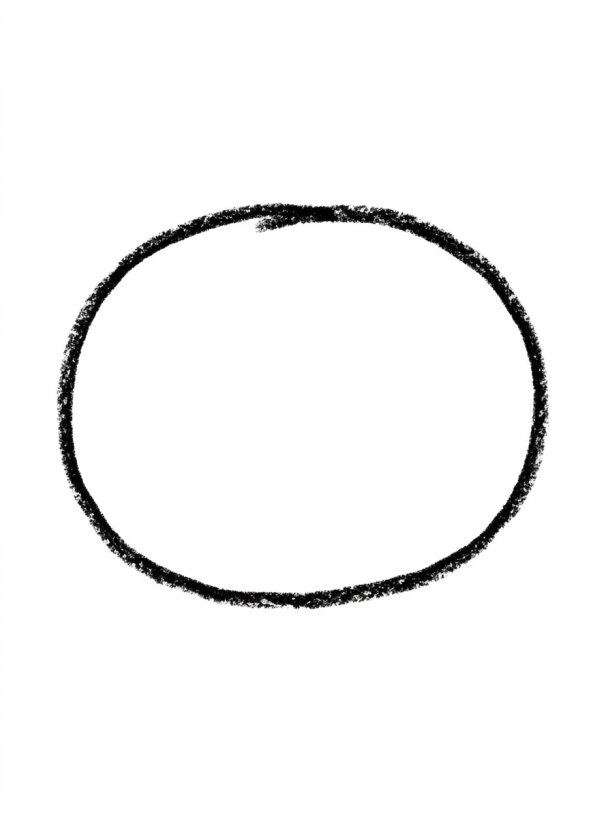
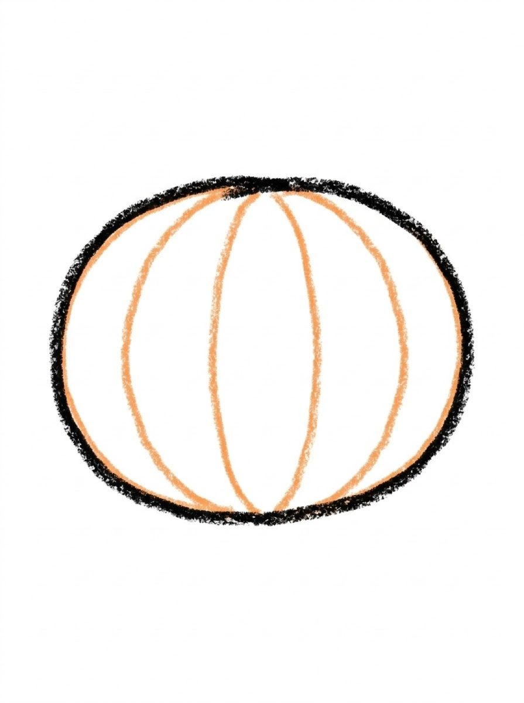
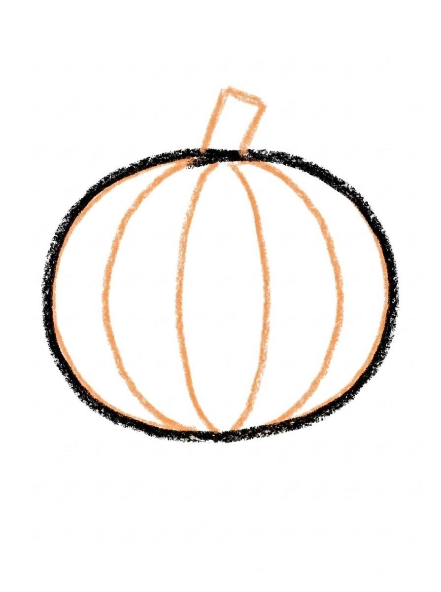
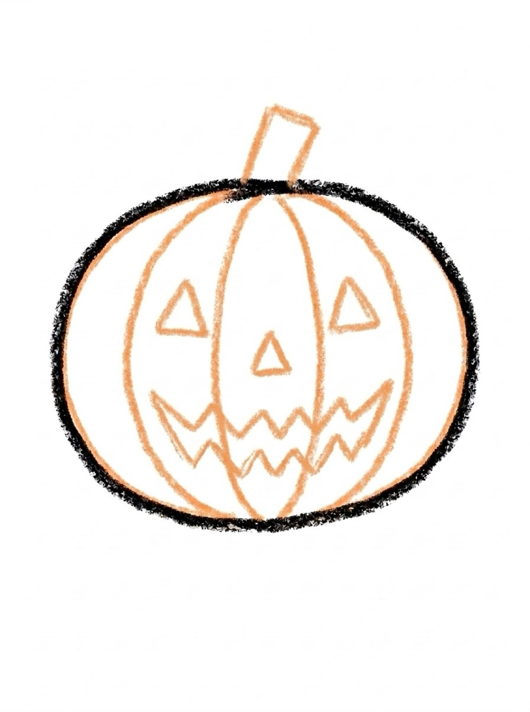
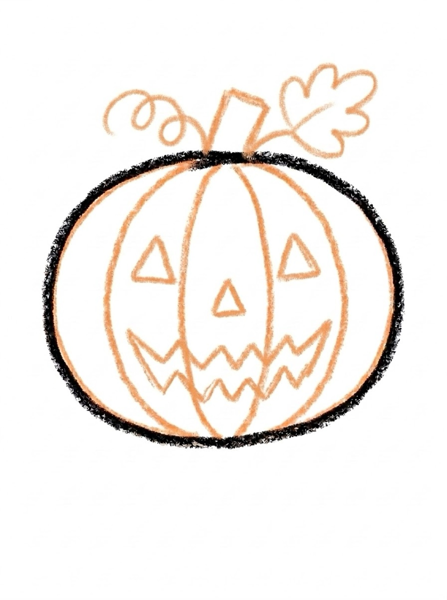
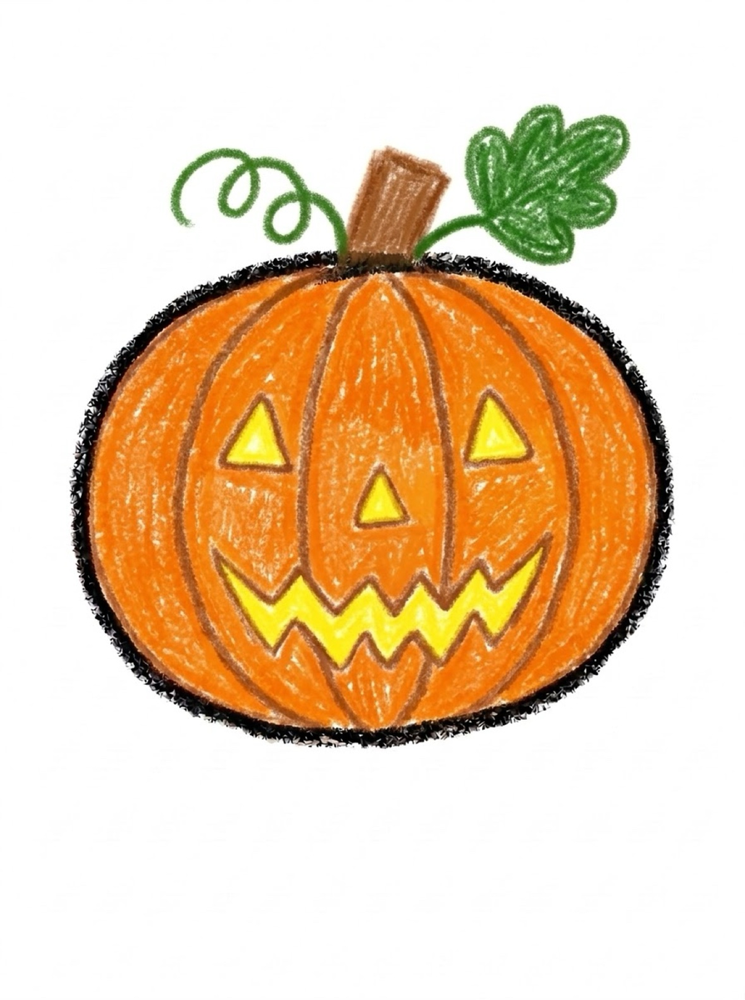

Pumpkin Drawing for Kids How to Draw a Pumpkin in 6 Easy Steps
Quick Answer
This free step-by-step tutorial shows kids how to draw a pumpkin in six easy steps: an oval, rib lines, a stem, a jack-o-lantern face, finishing details, and color. Download the printable PDF, grab crayons, and follow along together. Made for ages 4 and up — no signup needed, just print and draw.
At a Glance
- Subject: How to draw a pumpkin
- Ages: 3+
- Steps: 6 steps
- Time: ~10 min
- Difficulty: Easy
- Supplies: Paper, crayons
A pumpkin is the friendliest fall shape — round, plump, and impossible to mess up. Whether it becomes a jack-o-lantern or stays plain, the rib lines are what make it read as 'pumpkin' instantly.
✏️ How to Draw a Pumpkin: Step by Step
One step per box — draw each new part in a different color so kids can see exactly what changed.
Step 1: The Oval

Draw a big wide oval — a bit squished, wider than it is tall. This is the pumpkin's body.
Step 2: Rib Lines

Draw curved lines from top to bottom inside the oval, like orange slices. These are the pumpkin's ribs.
Step 3: The Stem

Draw a small chunky rectangle on top for the stem, slightly tilted.
Step 4: The Face

Draw triangle eyes, a triangle nose, and a jagged zigzag smile for a jack-o-lantern face. (Skip for a plain pumpkin!)
Step 5: Details

Add a curly vine next to the stem and a leaf shape.
Step 6: Color It In

Color it bright orange with a green stem — or go wild with a purple pumpkin!
📊 Pumpkin Drawing by Age
Every age can join in — just adjust the job.
| Age | What they can do | Tip |
|---|---|---|
| 3–4 | Trace the oval and color it orange | Draw the rib lines for them — curves inside curves are hard |
| 4–5 | Draw the oval, ribs, and stem with help | Let them choose: scary face, silly face, or no face |
| 6+ | Draw the whole pumpkin solo | Challenge: draw a whole pumpkin patch with different faces |
🖨️ Download Your Free Pumpkin Drawing Printable
The printable lays out all 6 steps one per box, big enough for little hands — kids draw right alongside each step.
⬇️ Open Free Printable 🖨️ Print🎁 Free printable for ages 3+
🎃 Pumpkin Patch Row
Draw five pumpkins in a row across the page — each with a different face: happy, silly, surprised, sleepy, spooky. It's the same six steps five times, but kids never get bored because the faces make each one a new character. Tape the row up as a Halloween garland. The harvest table adds a feast from how to draw a burger and a patch-mate in how to draw a carrot.
What You'll Need to Draw a Pumpkin
Orange is non-negotiable — grab two shades if you can (one for the body, a darker one for the ridge lines). Green or brown for the stem. The curved ridge lines from top to bottom need a smooth hand, so crayons glide better than markers here. White paper makes the orange glow; orange paper would wash it out.
What They're Learning
Pumpkins are secretly about curved vertical lines — the ridges that divide the sections. Drawing them evenly spaced from stem to base teaches rhythm and repetition. The stem (a small rectangle on top) contrasting with the round body also reinforces that different shapes combine into recognizable objects. It's great pre-writing practice for curved strokes.
Make It Yours
Turn it into a jack-o'-lantern with triangle eyes and a zigzag mouth — the Halloween classic. Or draw a whole pumpkin patch with different sizes, add curly vines and leaves, or stack three pumpkins into a snowman-style tower. A pumpkin pie slice next to the whole pumpkin is a fun Thanksgiving tie-in.
🛒 Our Favorite Drawing Supplies
These are the supplies we reach for in our own home — washable (because kids), quality paper, and enough colors to avoid fights.
As an Amazon Associate, MomYouNeedThis earns from qualifying purchases — at no extra cost to you.
❓ Pumpkin Drawing FAQs
What is the easiest way for a kid to draw a pumpkin?
Draw a wide squished oval and add curved rib lines inside from top to bottom. Top it with a chunky stem. For a jack-o-lantern, add triangle eyes and a zigzag smile — or leave the face off for a plain pumpkin.
What age can kids start learning to draw a pumpkin?
Most kids can draw the oval and ribs around age 4 with help, and the full pumpkin solo by 5 or 6. The rib curves are the trickiest part for little hands.
What supplies do we need to draw a pumpkin?
Paper and crayons or markers — orange and green are the classics. The free printable PDF lays out all six steps one per box so kids can draw right alongside each step.
Is the pumpkin drawing printable really free?
Yes — every printable on MomYouNeedThis is 100% free to download and print. No signup, no payment, just tap the download button.
How do I print the pumpkin drawing tutorial?
Open the PDF and print at 100% scale (not 'fit to page') so the drawing boxes stay big enough for little hands. The printable is designed to stay large — never shrunk to force a fit.
📚 Keep Exploring
- ✏️ All 76 Drawing Tutorials 76 free step-by-step drawing tutorials for kids.
- 🐾 Animal Coloring Free printable animal coloring pages for little learners.
- ✏️ Drawing Practice Free printable drawing pre-writing worksheet for toddlers.